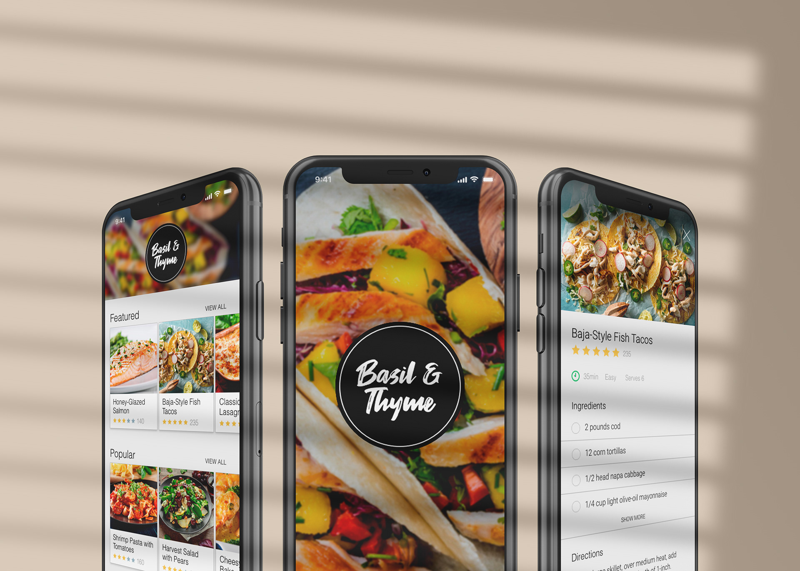
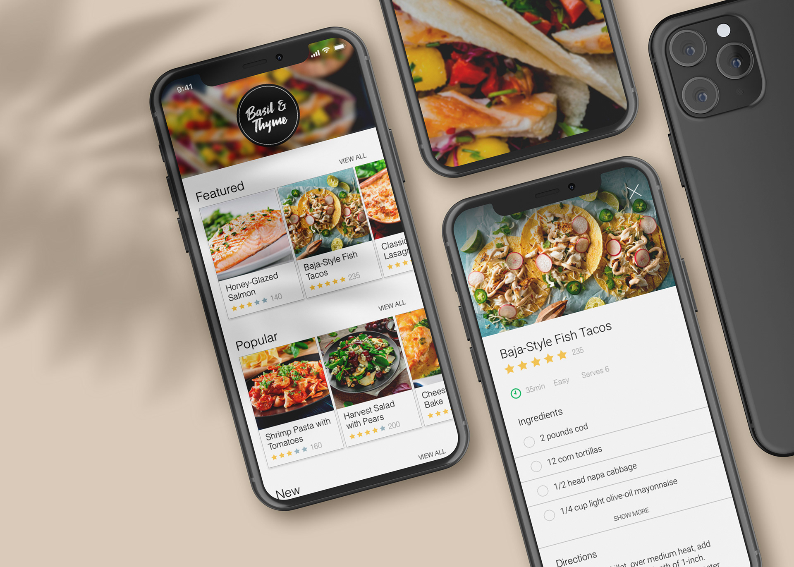

App concept project
Basil & Thyme Recipe App Design
Summary
A self-directed app concept focused on designing a clear, approachable recipe experience with an emphasis on usability and visual simplicity.
The project explored interface hierarchy, mobile UI patterns, and high-fidelity screen design for a food-focused digital product.
Programs used:

For over a decade, I’ve been turning ideas into experiences and digital things people actually want to engage with. I work across branding, digital design, marketing, UI/UX, and AI-assisted vibe coding and design workflow. I’m happiest where storytelling, design, and technology overlap as that’s usually where the good stuff happens.